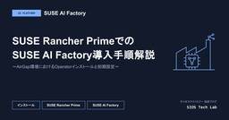

SIOS Tech Lab
https://tech-lab.sios.jp
サイオステクノロジーのエンジニアが クラウド、OSS、認証に関する様々な情報を提供します。
フィード
SUSE AI Factoryで始めるローカルLLMサービング解説 〜Ollamaの仕組みとモデル配置・推論API実行まで〜
SIOS Tech Lab
はじめに 本記事では、SUSE AI Factory で提供されている推論エンジンの1つであるOllamaの仕組みと特徴を解説し、後半では、OllamaのAPIを利用したモデルサービングおよび推論APIの実行手順について ...SUSE AI Factoryで始めるローカルLLMサービング解説 〜Ollamaの仕組みとモデル配置・推論API実行まで〜 first appeared on SIOS Tech Lab.
1日前
SUSE AI FactoryでのOpen WebUI導入手順解説 〜AirGap環境へのOpen WebUI・Ollama構築〜
SIOS Tech Lab
はじめに 今回は、SUSE AI Factory で提供されている、ブラウザからLLMとチャット形式で対話できるWebインターフェースのOpen WebUIの紹介をします。 本記事では最初にOpen WebUIの概要を説 ...SUSE AI FactoryでのOpen WebUI導入手順解説 〜AirGap環境へのOpen WebUI・Ollama構築〜 first appeared on SIOS Tech Lab.
2日前
自社開発のスピード感に挑む！企画から発表まで走り抜けた10日間の成長ロードマップ
SIOS Tech Lab
自己紹介とサイオスを選んだ理由 自己紹介 公立はこだて未来大学 システム情報科学部 情報アーキテクチャ学科の石川大雅です。 大学では、プロジェクト学習として、数年後を見据えたモバイルサービスの開発に取り組んでいます。そこ ...自社開発のスピード感に挑む！企画から発表まで走り抜けた10日間の成長ロードマップ first appeared on SIOS Tech Lab.
2日前
複雑な「データテーブル」を使いやすくするデザインパターン
SIOS Tech Lab
業務システムや管理画面のUI設計において、頻繁に登場し、かつエンジニアやデザイナーを悩ませるのが「データテーブル（表）」です。 データベースの値をそのまま画面に出力した結果、列が多すぎて横スクロールが長くなったり、どこに ...複雑な「データテーブル」を使いやすくするデザインパターン first appeared on SIOS Tech Lab.
3日前

SUSE Rancher PrimeでのSUSE AI Factory導入手順解説 〜AirGap環境におけるOperatorインストールと初期設定〜
SIOS Tech Lab
はじめに 前回の記事では、インターネットに接続できないAirGap環境のRKE2クラスターに対して、NVIDIA GPU DriverおよびNVIDIA GPU Operatorを導入し、PodからGPUを利用できるよう ...SUSE Rancher PrimeでのSUSE AI Factory導入手順解説 〜AirGap環境におけるOperatorインストールと初期設定〜 first appeared on SIOS Tech Lab.
4日前

VictoriaMetricsとGrafanaのメトリクスデータ連携のコツ
SIOS Tech Lab
こんにちはサイオステクノロジーの前田です。 VictoriaMetricsのデータを運用するときのコツについて紹介していきます。 VictoriaMetricsはGrafanaと連携して利用しやすい形にしてよく運用されま ...VictoriaMetricsとGrafanaのメトリクスデータ連携のコツ first appeared on SIOS Tech Lab.
4日前

トラブルからミツバチ誕生？！デザイン✕AI開発で挑んだ10日間
SIOS Tech Lab
自己紹介と参加理由 自己紹介 インターンシップに参加させていただいた田中夢乃です！ 大学ではプログラミングやネットワークなどの情報技術を学びながら、牡蠣の養殖現場をIoTで支えるプロジェクトにも取り組んでいます。 趣味は ...トラブルからミツバチ誕生？！デザイン✕AI開発で挑んだ10日間 first appeared on SIOS Tech Lab.
8日前
Observability 実現の代表格「OpenTelemetry」って何だ？
SIOS Tech Lab
こんにちは。サイオステクノロジー OSS サポート担当 山本です。 今回は OpenTelemetry について、他の「監視」関連の OSS を交えながら概要をざっくり見ていこうと思います。 ■OpenTelemetry ...Observability 実現の代表格「OpenTelemetry」って何だ？ first appeared on SIOS Tech Lab.
8日前
とりあえずReact/Next.jsを選ぶのをやめたい｜AI時代のWebアプリ技術選定
SIOS Tech Lab
AIがコードを書く時代、React/Next.jsは本当に最適？htmx・Inertia・フルスタックTS・SPAの4構成を作るもの別に選び方を整理します。とりあえずReact/Next.jsを選ぶのをやめたい｜AI時代のWebアプリ技術選定 first appeared on SIOS Tech Lab.
9日前
コンフリクトの頻発を乗り越え「報告・連絡・相談」でチームが団結！
SIOS Tech Lab
自己紹介とインターン参加の理由 自己紹介 公立はこだて未来大学 情報システム科学部 情報アーキテクチャ学科3年の阿部大晟と申します。 大学では主に情報デザインについて学んでおり、現在は数年後の未来で使われるアプリを制作す ...コンフリクトの頻発を乗り越え「報告・連絡・相談」でチームが団結！ first appeared on SIOS Tech Lab.
9日前